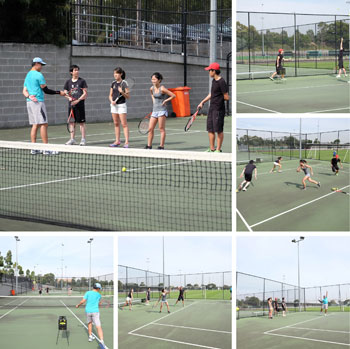

Tennis Coaching
Beginner's Class
Ideal for first time players who have limited, or no experience. In this 8-week course you will learn the fundamentals of this fabulous game in a relaxed and friendly environment. Classes are organised in groups of 6 and will cover all the basics including groundstrokes, serve, volley, overhead and game rules.
Racquet and balls will be provided, but you can bring your own if preferred.
Venue: UNSW Tennis Courts, David Phillips Field, Banks Ave & Gwea Ave, Daceyville
Course duration: 8 weeks
Class duration: 1 hour per week
| Cost: | UNSW Student / Staff / Concession | $200 |
| Public | $216 |
| Course start date: | University Term 1: 24 February 2025 (email registration starts from 27 Jan to 14 Feb). |
| University Term 2: 9 June 2025 (email registration starts from 12 May to 30 May). | |
| University Term 3: 22 September 2025 (email registration starts from 25 Aug to 12 Sep). |
| Class options: | Monday | 5:00PM - 6:00PM |
| Tuesday | 5:00PM - 6:00PM | |
| Friday | 5:00PM - 6:00PM | |
| Friday | 6:00PM - 7:00PM | |
| Saturday | 10:00AM - 11:00AM |

Enrolment:
Please send us an email at unswtenniscourse@gmail.com with the following details:
1. First Name:
2. Last Name:
3. Email:
4. Mobile No:
5. Student No:
6. Day of the week and Time of Class (First Preference):
7. Day of the week and Time of Class (Second Preference):
Important Course Information:
- Wear comfortable clothing, sport shoes and bring water
- Apply sunscreen 30 minutes before class (for day classes)
- Please aim to be early so that the class can start on time
- Medical issues which may interfere with class participation should be discussed with instructor prior to first lesson
- You will be informed of any updates or wet weather class cancellation by email or SMS
- Maximum of 2 weeks make up classes will be provided at the end of the course in the event of classes being cancelled due to wet weather.
- No classes will be held on public holidays or semester break.
Refund and Transfer Policy
Please choose carefully as we do not refund unless the course is cancelled or unless there is proof of extenuating circumstances where it is not possible for student to participate in course. A transfer to a different class may be granted prior to course commencement date. No transfer is allowable between classes once the course has commenced. No make up class will be provided to individuals for any class missed unless the class is cancelled due to wet weather.